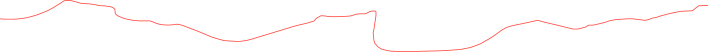

Reach App for Climbers
Reach is a training app for intermediate boulderers who have reached the point where climbing more isn’t enough.
It brings session logging, structured workout plans and progress tracking into one simple tool. Working as a team of two, we took it from user interviews to a full product: a core user flow, a visual identity built on how climbers read a wall, and a landing page to launch it.
In collaboration with: Or Sinalevich
Course: Startup! Intro to ux/ui and Product Design, Third-year (2026)
Mentor(s): Ben Lev, Ofir Gurevich
Designed and prototyped in Figma
Landing Page & App
The main use case of the app happens between attempts, with chalky hands and little time, so interaction during a session is kept to a minimum.
Almost every screen has one red CTA on a black background, and holds are logged by tapping them on a map, an affordance taken straight from the wall.
The landing page reflects the experience of a climb: an upwards scroll and a route line that leads the visitor through the sections in order, using the same black, red and hold shapes as the app.
Brand values: Instinctive / Responsive / Grounded / Minimal / Calculated / Outdoorsy
